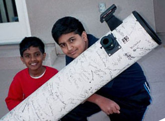
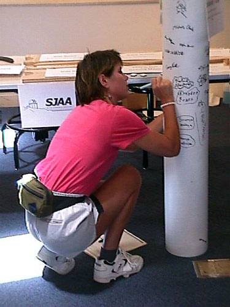
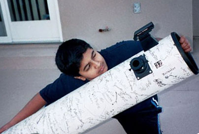

|  |
It was a clear Friday night, perfect for sky watching. The moon was in its last quarter, a mere silver crescent in the sky. Our family piled into our car and drove to Houge Park, enticed at the prospect of renting a telescope from the SJAA. Upon arriving at the star party, we gazed at the multitude of telescopes, from small 2" telescopes to gigantic 18" dobsonian monsters.
We strolled over to the end of the long line of scopes, and came upon the SJAA representative, who had been waiting for our family. We had reserved a 14" dob, and we saw the huge telescope, painted in a dark shade of brown. Immediately, we thought to ourselves, "No way that's going to fit in our car!" Luckily for us, there was another unreserved scope. It was a 6" dob, the most special of all the loaners the SJAA had. On the cardboard shell of the scope were hundreds of signatures in black marker. Volunteers at SJAA had built this telescope during a all-day telescope making session.
|  |
As the weather grew progressively colder we stayed inside, and looked through the windows, occasionally spotting a cluster of interest and looking at it through the scope. The laser dot-scope (finder scope) made it amazingly easy to focus on objects, and the dob mount was fine to track them, as long as you moved it a fraction of an inch every 5 minutes. One of my favorite things to do was to track moving planes and satellites. My parents, however, preferred to stick with more stationary, astronomical objects. In the end, this scope was one of the best astronomy related things that ever happened to us.
|  |